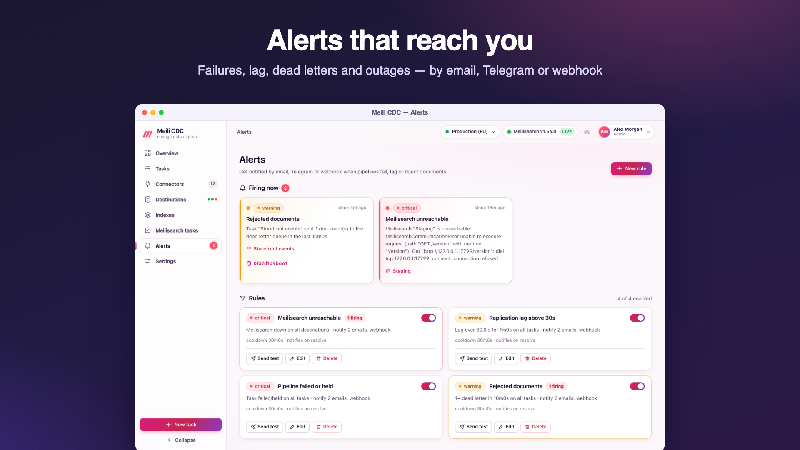
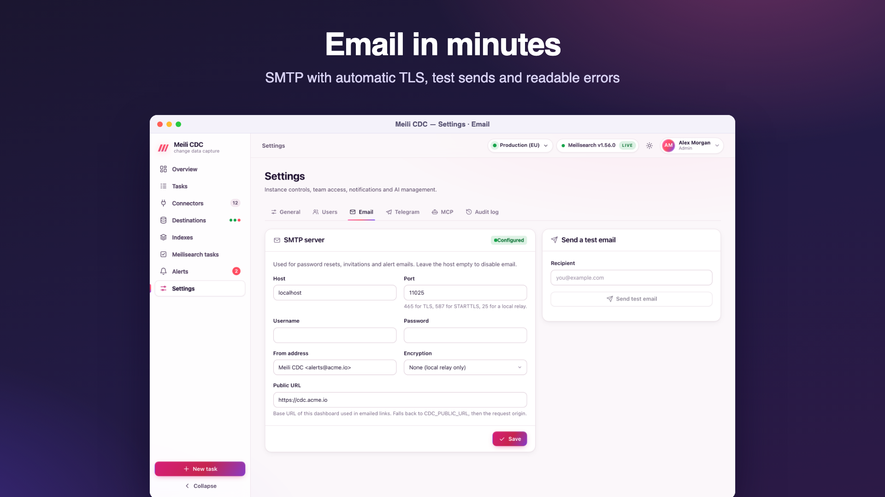

Alerts and notifications
Alert rules watch tasks and Meilisearch instances and notify you by email, Telegram or webhook when something needs attention, then again when it is resolved.

Before you create rules
A rule can only be created or enabled when email (SMTP) or a Telegram bot is configured (otherwise 409: alerts need a notification channel). Every rule needs at least one recipient: an email address, a Telegram chat or a webhook URL. Email recipients need SMTP and Telegram chats need the bot (422 with the reason). A disabled rule can always be saved. Managing rules needs the admin role; viewing them, the history and active alerts needs viewer.
Rule conditions
| Type | Fires when | Parameters (defaults) |
|---|---|---|
task_state | A task is in one of the chosen states. | states (failed, held; retrying and others can be added) |
lag | A streaming task's lag exceeds the threshold. | thresholdMs, required (the dashboard asks for seconds) |
dlq | At least count new dead letters arrived within the window. | count (1), window (5m) |
errors | At least count pipeline errors happened within the window. | count (1), window (5m) |
stalled | A task in starting, snapshotting, resyncing or retrying made no progress for the for duration. | for (10m) |
meili_down | A Meilisearch destination is unhealthy. | destinationIds (empty = every destination) |
Common fields
| Field | Default | Meaning |
|---|---|---|
name | required | Shown in notifications. |
enabled | Disabled rules are not evaluated. | |
taskIds | empty = every task | The tasks the rule watches (ignored by meili_down). |
condition.for | 0 | How long the condition must hold before the alert fires (all types; stalled already includes it). |
severity | warning | info, warning or critical. |
cooldown | 30m | While an alert keeps firing, a reminder is sent after each cooldown. At least 1m. |
notifyResolved | off | Also notify when the condition clears. |
channels | emails, telegramChatIds, webhookUrl, webhookSecret. |
Rules are evaluated every CDC_ALERT_INTERVAL (5 seconds by default), separately for each task (or destination). Alert state is persisted, so a restart does not send the same notification again. Changing a rule restarts its state.
{
"name": "Pipeline failed or held",
"enabled": true,
"condition": {"type": "task_state", "states": ["failed", "held"], "for": "1m"},
"taskIds": [],
"severity": "critical",
"channels": {
"emails": ["ops@example.com"],
"telegramChatIds": ["-1001234567890"],
"webhookUrl": "https://hooks.example.com/cdc",
"webhookSecret": "whsec_…"
},
"cooldown": "30m",
"notifyResolved": true
}Test, history and active alerts
- Send test on a rule delivers a test notification (marked
TEST) on each of its channels and shows each delivery's result. Test notifications are not stored. - The history lists every firing, reminder and resolution with each delivery (channel, target, success or error), filterable by rule and state.
- Active alerts are the ones firing now; they also appear live in the dashboard.
Email (SMTP)
Configure it in Settings → Email (admin). Email is also used for invitations and password resets.

| Field | Meaning |
|---|---|
| Host, port | The SMTP server. Port 465 for TLS, 587 for STARTTLS, 25 for a local relay. An empty host disables email. |
| Encryption | auto (default): TLS from the first byte on port 465, STARTTLS otherwise, and plain text only when the server lacks STARTTLS and no password is sent. tls: TLS from the first byte. starttls: upgrade a plain connection. none: plain text, for local relays only. |
| Username, password | Optional. The password is stored encrypted and shown masked. |
| From | The sender address, for example Meili CDC <cdc@example.com>. |
| Public URL | The dashboard URL used in links (overrides CDC_PUBLIC_URL). |
A mode that cannot work on its port is corrected when sending: starttls on port 465 uses TLS, and tls on ports 25 or 587 uses STARTTLS. If a password would be sent over a server without STARTTLS, sending fails rather than leaking it. Send test email reports the server's answer; typical errors explain the port and mode mismatch, for example the server sent no greeting: it probably expects TLS from the start; use port 465 with TLS, or check the port.
Telegram
Configure it in Settings → Telegram (admin):
- In Telegram, talk to @BotFather and send
/newbot. Copy the token it gives you. - Paste the token and save. The service validates it with the Bot API's
getMe(an invalid token is refused with422) and shows the bot's name. The token is stored encrypted. - Add the bot to your group, or to your channel as an administrator, then send a message there.
- Find the chat id: open
https://api.telegram.org/bot<token>/getUpdatesand readchat.id. Group and channel ids start with-100; a public channel can also be addressed as@channelname. - Send a test message from the settings page, then use the id in alert rules.
The API URL defaults to https://api.telegram.org and can point to a self-hosted Bot API server. Telegram messages are sent as HTML with a link to the dashboard when a public URL is known; Telegram's flood control (retry_after) is honoured.
Webhook
A rule with a webhookUrl POSTs a JSON body to it. The text field makes Slack, Mattermost and Discord-compatible endpoints render the alert directly:
{
"text": "[CRITICAL] Pipeline failed or held · Products\nTask \"Products\" is failed: open source: postgres: connect: …",
"link": "https://cdc.example.com/#/tasks/products",
"event": {
"id": "00000001761500000000-a1b2c3d4",
"ruleId": "r1", "ruleName": "Pipeline failed or held", "severity": "critical",
"taskId": "products", "taskName": "Products",
"state": "firing",
"message": "Task \"Products\" is failed: open source: postgres: connect: …",
"at": "2026-10-26T20:12:00Z",
"deliveries": []
}
}The subject line in text is [LABEL] rule name · task or destination name, where the label is the severity in capitals, RESOLVED for resolutions and starts with TEST · for test sends. event may also carry destinationId, destinationName and reminder: true. link is empty when no public URL is known. Delivery is tried up to 3 times within 30 seconds; 429 and 5xx are retried, other 4xx responses are not.
Signed webhook deliveries
Give the rule a signing secret (channels.webhookSecret, at least 16 characters; Generate creates a whsec_… value, and it requires a webhook URL). Every delivery then carries the same two headers the webhook source uses:
X-CDC-Timestamp: 1767225600
X-CDC-Signature: sha256=<hex HMAC-SHA256(secret, timestamp + "." + raw body)>The secret is encrypted at rest and returned as ••••••; send the mask back to keep it. Receivers should recompute the HMAC over the raw body bytes (before any JSON parsing), compare it in constant time, and reject timestamps older than a few minutes to block replays.
Verify in Node.js
import { createHmac, timingSafeEqual } from 'node:crypto';
import express from 'express';
const SECRET = process.env.CDC_ALERT_SECRET;
const app = express();
app.post('/cdc', express.raw({ type: 'application/json' }), (req, res) => {
const ts = req.get('X-CDC-Timestamp') || '';
const got = Buffer.from(req.get('X-CDC-Signature') || '');
const want = Buffer.from('sha256=' + createHmac('sha256', SECRET).update(`${ts}.`).update(req.body).digest('hex'));
const fresh = Math.abs(Date.now() / 1000 - Number(ts)) <= 300;
if (!fresh || got.length !== want.length || !timingSafeEqual(got, want)) return res.sendStatus(401);
const alert = JSON.parse(req.body);
console.log(alert.text);
res.sendStatus(204);
});
app.listen(3000);Verify in Python
import hashlib, hmac, os, time
from flask import Flask, request, abort
SECRET = os.environ["CDC_ALERT_SECRET"].encode()
app = Flask(__name__)
@app.post("/cdc")
def cdc_alert():
ts = request.headers.get("X-CDC-Timestamp", "")
sig = request.headers.get("X-CDC-Signature", "")
body = request.get_data() # raw bytes
want = "sha256=" + hmac.new(SECRET, ts.encode() + b"." + body, hashlib.sha256).hexdigest()
if not ts.isdigit() or abs(time.time() - int(ts)) > 300 or not hmac.compare_digest(sig, want):
abort(401)
print(request.get_json()["text"])
return "", 204To test a receiver by hand, compute a signature with openssl exactly as in the webhook source example.